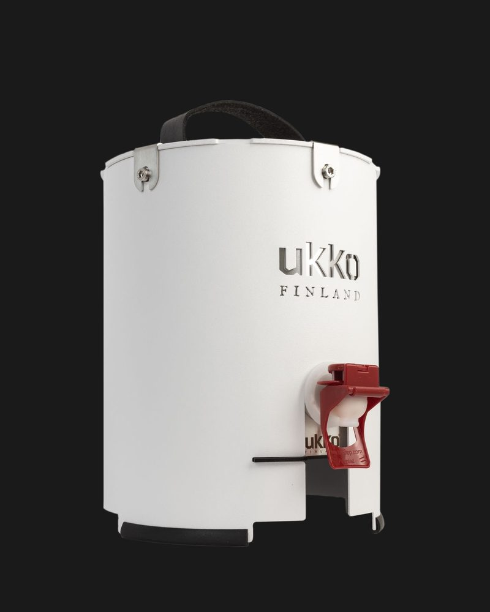
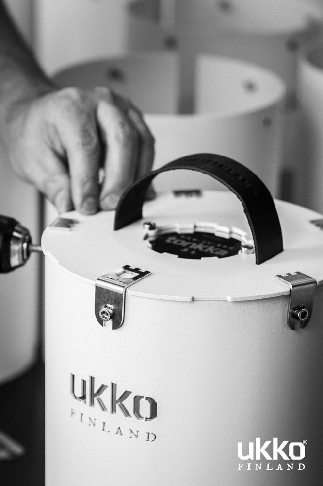
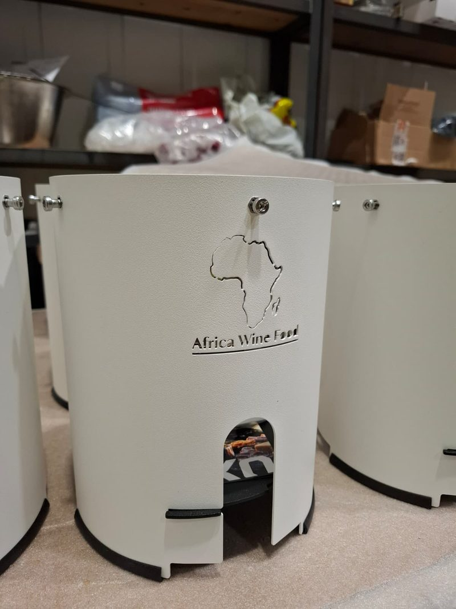
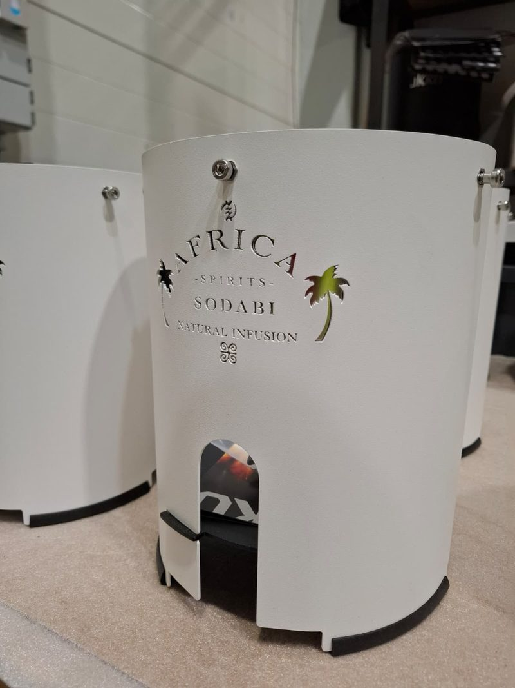
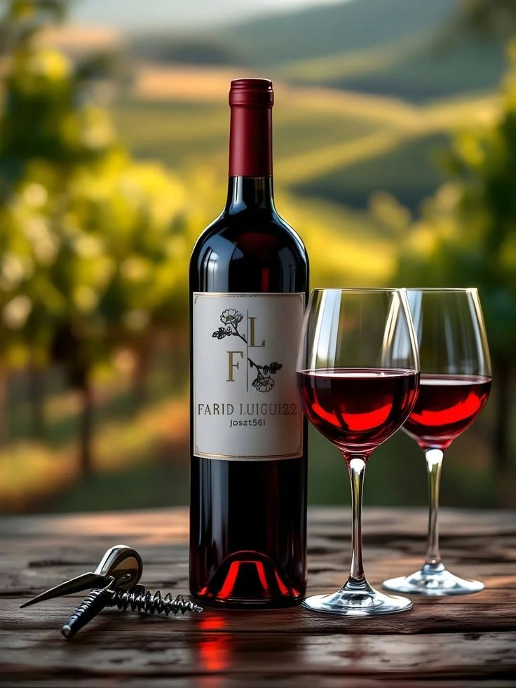

Notre histoire
À propos
Vins et spiritueux d'exception, à Lomé, au Togo.

Une passion née entre deux continents
Africa Wine Food est basée à Lomé, au Togo. Notre conviction : l'Afrique mérite un accès aux plus grands vins du monde, avec le service et l'expertise qui leur sont dus.
Nous sélectionnons avec rigueur des vins et des spiritueux venus de plusieurs pays, pour des bouteilles qui méritent une place dans vos caves et sur vos tables d'exception.
Nous servons une clientèle exigeante à Lomé et partout en Afrique, amateurs comme professionnels du vin.
Fabriqué en Finlande
Notre distributeur de boissons
Le distributeur Ukko Tonkka, conçu en Finlande, s'habille de notre marque. Il existe en blanc et en noir, en version Africa Wine Food et en version Africa Spirits Sodabi.




Dans l'atelier, en Finlande


{kind=link}
{kind=link}
{kind=link}
{kind=link}
Ce qui nous guide
Mission, Vision & Valeurs
Notre Mission
Démocratiser l'accès aux grands vins et spiritueux d'exception en Afrique, en proposant une sélection pointue, un service irréprochable et une expertise authentique.
Notre Vision
Devenir la maison de référence du vin de luxe en Afrique subsaharienne, et faire rayonner la culture du vin auprès des nouvelles générations africaines.
Nos Valeurs
Excellence, authenticité, intégrité et passion guident chacune de nos décisions, du choix d'un millésime à la relation avec nos clients.
L'expertise humaine
Notre équipe

Tintin Kokou BARBOZA
Fondateur & Directeur général
Fondateur et directeur général d'Africa Wine Food, à Lomé.
Travaillons ensemble
Prêt à découvrir notre sélection ?
Consultez notre catalogue ou contactez directement nos experts pour un accompagnement sur mesure.